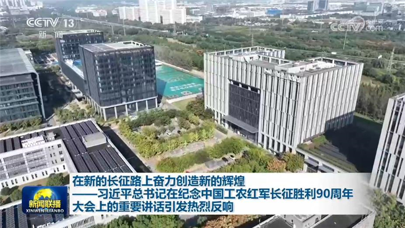
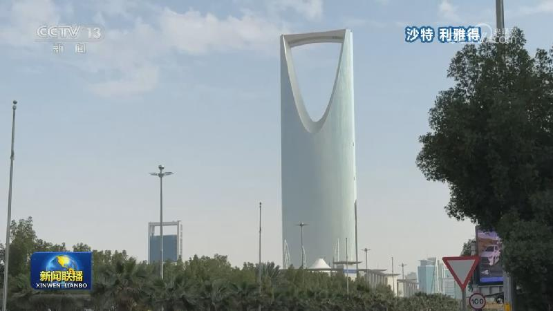

01
中共中央政治局召开会议 审议《关于二十届中央第七轮巡视情况的综合报告》 中共中央总书记习近平主持会议
中共中央政治局10月23日召开会议，审议《关于二十届中央第七轮巡视情况的综合报告》。中共中央总书记习近平主持会议。

中共中央政治局10月23日召开会议，审议《关于二十届中央第七轮巡视情况的综合报告》。中共中央总书记习近平主持会议。
10月22日22时33分许，西藏那曲市巴青县发生7.0级地震，造成重大人员伤亡。
应国家主席习近平邀请，德国总统施泰因迈尔将于10月27日至31日对中国进行国事访问。

铭记历史方能开创未来。习近平总书记在纪念中国工农红军长征胜利90周年大会上发表重要讲话，向全党全军全国各族人民发出号召：新征程是充满光荣和梦想的远征，是党和人民的新长征。抚今追昔、展望未来，我们要大力弘扬伟大长征精神，同心协力走好新的长征路。总书记的重要讲话凝聚起亿万中华儿女万众一心，砥砺奋进新征程的磅礴力量。……
国务院总理李强10月23日主持召开国务院常务会议，研究统筹人口与经济社会发展有关工作，听取推进全国服务业大会部署落实情况汇报。
西藏那曲市巴青县7.0级地震抢险救援工作抓紧进行。截至今天（10月23日）下午1时，西藏那曲市巴青县7.0级地震已造成16人遇难、76人受伤。
为贯彻落实习近平总书记重要指示精神，近日，中央组织部从代中央管理党费中向西藏划拨专项资金2500万元，用于支持抗震救灾工作。
财政部最新数据显示，今年前三季度，全国一般公共预算收入17.23万亿元，同比增长5.1%，增幅比上半年提高0.4个百分点。我国经济运行总体平稳，延续向新向优发展态势，价格上行、外贸增势强劲等因素有力支撑财政收入增长。
第140届广交会第二期线下展今天（10月23日）开展。本期展览以“品质家居”为主题，绿色低碳产品成为本期展会一大亮点。
新版《对外投资管理办法》发布
国际人士高度评价习近平主席在纪念中国工农红军长征胜利90周年大会上的重要讲话。他们表示，长征精神正焕发着独特的时代价值，持续激励中国人民奋勇向前，也为世界应对挑战、寻求发展带来启示。

俄称重启三方会谈是为最终确保俄乌安全
霜降是秋季的最后一个节气。节目的最后，我们一起感受这个时节的自然之美、文化之韵。